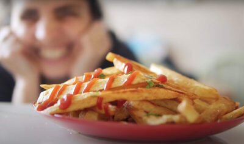

Papas Fritas Crocantes
Todos los trucos
¿Que necesitamos?
INGREDIENTES
-
- 2 Papas Grandes
- Aceite
- sal
PREPARACION
-
- Pelar y remojar las papas
- Pelar las papas y cortarlas en tiras, dejarlas reposar en agua fría por 30 minutos y luego secarlas bien! Esto último es importante, las papas deben estar totalmente secas antes de ponerlas en aceite.
- Calentar aceite
- En una olla colocar abundante aceite y calentarlo bien. Recuerden que es muy importante que no escatimemos con aceite. Lo comentamos más arriba en los consejos, es importante que las papas estén totalmente sumergidas en aceite.
Cuando el aceite está caliente bajar el fuego antes de colocar las papas.
- Primer fritura
Pueden llevar las papas a la heladera o dejarlas en un lugar frío para que bajen temperatura. Las papas deben estar totalmente frias (no tibias) para llevarlas a la segunda fritura.
- Freir las papas hasta el punto que estén solo cocidas. Si van a continuar con ésta receta las papas no deben estar doradas en la primer fritura ya que las terminaremos de dorar en la segunda, y éste es el secreto principal para que las papas fritas sean crocantes. Mientras van saliendo las papas se colocan en un recipiente con papel de cocina que absorva el aceite.
Este recipiente debe ser amplio, como hemos comentado más arriba, para que las papas no se encimen y se ablanden.
- Dejar reposar hasta enfriar